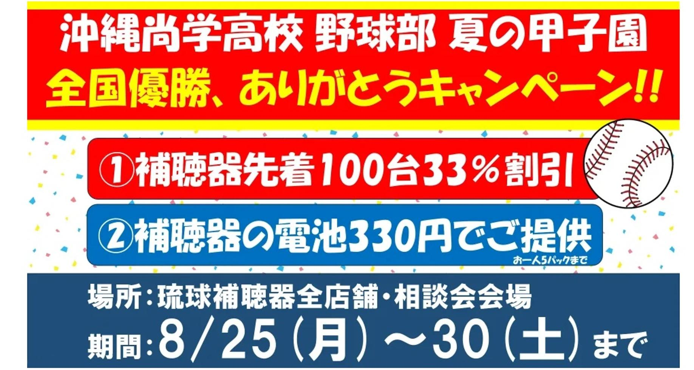

うるがいの話 ある日
最新: 補聴器のアプリ【うるがいの話 ある日】とは 一日だけのプログです
『うるがいの話』の最新一日だけのプログで、通信料が少なく経済的だ。カニの画像をクリックすると全ての日付が載る『うるがいの話』サイトを表示します
|
|
【うるがいの話】 うるがい(ｳﾙｶﾞｲ urugai)とは、『もずくがに』の名前でとても大きくなります。 |
|---|---|
|
|
【カミマヤーの話】 猫のことを方言でマヤーといいます。カミマヤー（kamimayaa）とは、神の猫のことです。 |
|
【たながぁの音楽】 たながぁ（ﾀﾅｶﾞｰ tanagaa）とは手長えびのことで、何種類かあり大きいのは車 エビぐらいになります。 |

|
【ぶながぁの話】 ぶながぁ(ﾌﾞﾅｶﾞｰ bunagaa)とは、赤い髪の毛、赤い身体、そして身長は１ｍ２０ｃｍ ぐらい、川の蟹を食べているの目撃された。場所は沖縄県国頭郡大宜味村のと ある村僕の隣近所に住んでいる爺さんから、聞いた話です。 |
|
|
【ギーマの話】 ギーマ(giima)とは、山原の里山に咲くスズランに似た、 花を付けます。実は食べられます、 気が付くと口の周りが紫になっています。 |
2025年08月29日 (金）補聴器のアプリ
17:18
補聴器のアプリをインストールする、役所へ電話するとなんだか
おかしい？、補聴器から声は聞こえる。なんと、ブルートゥース
でイヤホンと同じになっている。それはそれでいいんだけど、少
し違和感がある。補聴器のお店から配られた説明書には、インス
トールしかない！。ネットから、説明書を探しダウンロードする
。そもそも、アプリを入れた理由は、紛失した場合の位置検出機
能を利用したかっただけなので（何せ、片方で小型バイクの値段
に相当する）。ブルートゥースをオフにしても、位置検出機能は
利用できた。
機種：モーメント220RIC312D カラー120
紛失・過失保証オプション１，１００円込みで月額９，４００円
電池は、１０個入り １、２５０円２個２５０円（約１０日）
しめて、ひと月では１０，１５０円、ネ高いでしょう。なかなか
おいそれとは利用できない値段である。
ただし、契約時に買った電池は、沖縄尚学の優勝セールで安くな
っていたので躊躇なく購入する。ただね、サイトの情報では電池
は、無料って書いている。チラシなどで、訪問すれば無料って書
いてあるよと確認したら、購入したら！！とサブスクは対象外と
※でその旨を書いてよね！。ま、愚痴ると多々あるのだが、我慢
始めての電池購入は、セールの６個入り３３０円を５個購入

使えないソニーのテレビ（パソコンのモニタにもなる）を、エデ
ィオンで廃棄したら、７、９２０円！！（３千円ほどと思って５
千円札を準備していた、クレジットカードを使う）。それってな
んか、高すぎる。